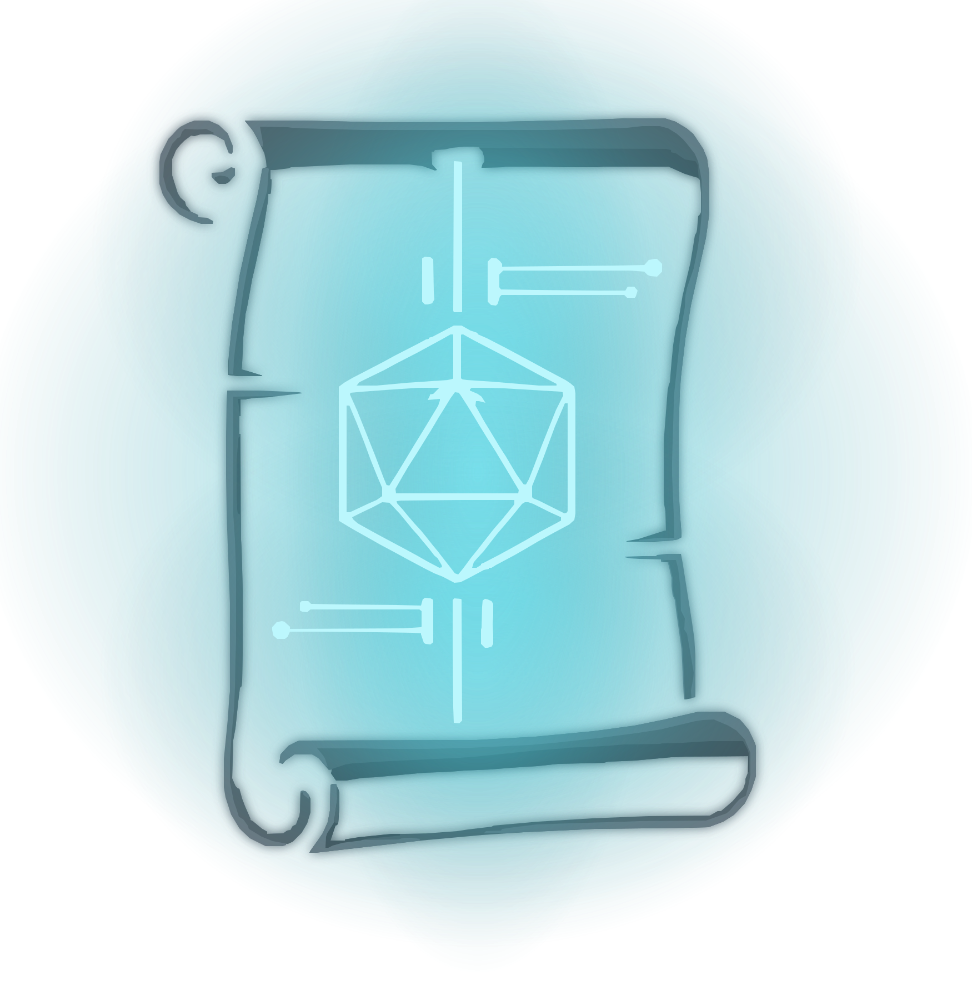
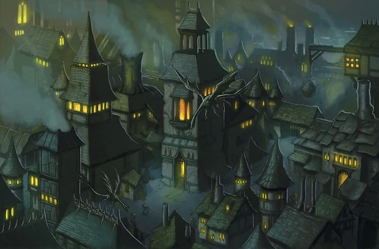
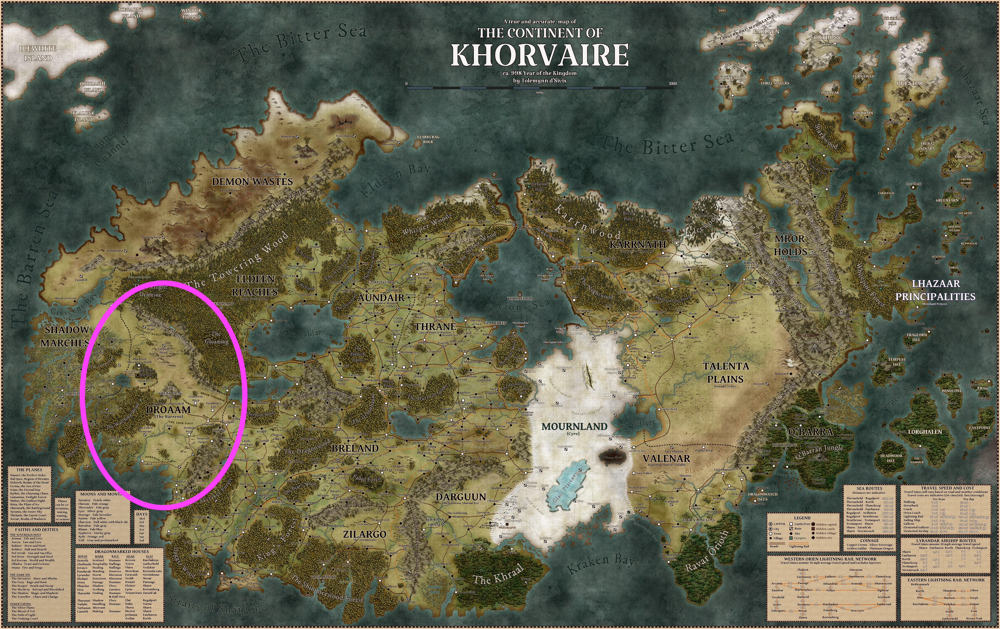
Khorvaire. Your continent. Graywall is on the far western edge.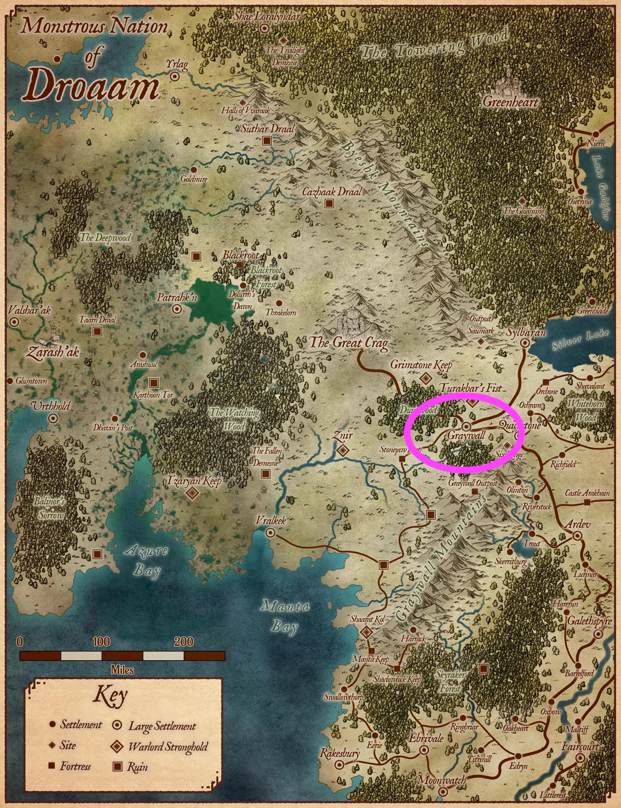
Droaam. The monster nation you call home.You don't have to know everything about the world, Eberron, or the big war that happened before you were born. If you have questions, just ask — but honestly, your characters wouldn't know most of that stuff either. The world gets bigger as your story goes on.
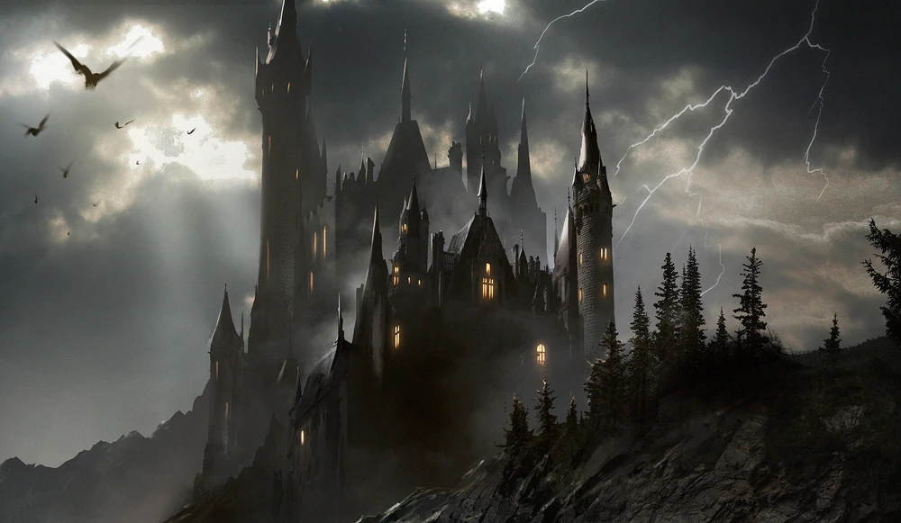

Once you've picked race and class, answer these about your character. Both of you.
This is what you'd know if you grew up in Graywall:
Your neighbours: Goblins, orcs, ogres, gnolls, harpies (they sing the news), gargoyles (they deliver mail), a medusa or two (don't stare). Everyone gets along, mostly. Bigger creatures have the right of way.
The dead: There's a small community near the south gate who follow a faith called the Blood of Vol. They believe everyone has a spark of divinity inside them, and that when you die, your body can still serve the people you love. So they have skeletons and zombies doing the heavy work — hauling stone, standing guard at night, carrying things. It's weird at first, but nobody in Graywall minds. The Seekers (that's what the faithful call themselves) are quiet, they keep to themselves, and their undead don't bother anyone. A few skeletons sweep the streets near the south gate every morning. There's a zombie who tends a candle stall in the Bloody Market — he's been there longer than anyone can remember. In Graywall, the dead are just neighbours who didn't stop working.
Food: There's free stew called grist. It's made from troll meat — the trolls grow it back, so don't feel bad. The best restaurant in town is run by a goblin chef called Bahiri, in the small-people quarter.
The boss: A mind flayer named Xor'chylic runs the town from a tower. Tentacle face, reads minds. He's fair, but you really don't want to annoy him.

The country: Droaam is run by three powerful sisters far away in the capital. They're ancient, they're powerful, and everyone respects them. That's all you need to know about them for now.

You grew up here. These are the places you know.
| Place | What's Cool About It |
|---|---|
| Bloodstone | The arena where people fight monsters! Challenge rings in the street where anyone can dare anyone. The Bloody Market sells weird stuff from old ruins. |
| Sar Kuraath | The goblin quarter — everything is tiny! Best food in town at Bahiri's. Free troll-meat stew (don't worry, the trolls grow it back). |
| The Calabas | The "normal" quarter with a theatre that only shows plays that are BANNED everywhere else. |
| The Karda | The fortress. The mind flayer lives here. Don't go unless invited. |
| Around Town | Harpies sing the news from rooftops. Gargoyles deliver mail (tip: give them riddles). Bigger creatures always have right of way. There's a night hag who sells bottled dreams from a tent that appears and vanishes. |
Detailed breakdown of the four quarters and local knowledge. Use this at the table to drop details as the kids explore. Compass positions are for drawing the city map — south wall is where the vines are, castle and Watching Wood are further south beyond it.
| Quarter | Position | Key Locations | Who's There | What to Know | Campaign NPCs Here |
|---|---|---|---|---|---|
| Bloodstone | NW (top left) | Arena, Challenge Rings, Bloody Market, The Labyrinth | Minotaurs, ogres, gnoll hunters, tiefling merchants | Largest quarter, red stone, everything happens here. Condemned fight for freedom in arena. Challenge rings at intersections for dares. Labyrinth inn in old mine tunnels. The arena where people fight monsters! Weird stuff from old ruins at the Bloody Market. | Korrga (Vaelk's orc persona) moves crates through docks at night |
| Sar Kuraath | NE (top right) | Bahiri's, grist mill, clan halls, Rixit's apothecary | Goblin clans (Bone Crows, Hammer-Knockers, Hidden Hands, Stonebreakers), kobolds | Everything goblin-sized. Best food in town at Bahiri's. Grist = renewable troll meat (stew, pie, sausage). Harpy sings workers to sleep at end of each shift. Free troll-meat stew (don't worry, the trolls grow it back). | Rixit — apothecary, vine map in back room |
| The Calabas | SE (bottom right) | The Roar (plaza), Silenced Stage, Twilight Palace, Merry Marcher, Thesska's walled estate | House Tharashk guards, human traders, exiled artists | Foreign quarter, signs in Common, "normal" buildings. Banned plays at Silenced Stage. Jorasco healing house. Dragonne statue at center. The "normal" quarter — theatre only shows plays BANNED everywhere else. | Sera Tain — grifts here. Thesska Mirren — walled estate. Dresh — tavern gossip (ex-servant). Sister Aldrice (Vaelk's clergy persona) visits sick here |
| The Karda | S center (bottom middle) | Last Tower (court+prison), Xor'chylic's tower | Flayer Guard, Znir gnolls | Walled fortress. Don't go unless invited. Public executions. Architecture feeds on fear. Mind flayer reads intentions. | — |
| South Wall | S edge (very bottom) | City wall, gates south | City watch | Vine infestation here. Dark vines appeared overnight, grow back by morning. Wall cracking. Nature DC 12: not local species. Herbalism DC 14: necrotic trace. | Korrath rants at the Bloody Market in Bloodstone (near the Labyrinth entrance) |
| Beyond South | Off map, south | The Castle, Watching Wood | — | Castle = Vaelk's base, overgrowing, lights at night. Watching Wood = vine epicentre, Verdemis's garden deep inside. Torvik's body in early vine growth. | Vaelk (goblin face) — castle. Korrath — edge of Watching Wood. Lady Verdemis — deep in Wood |
| Local Knowledge | — | (everywhere) | Harpies, gargoyles, Jabra, medusas | News sung by harpies. Mail by gargoyles (love riddles). Bigger = right of way. Jabra (night hag) sells potions & dreams from tent. Dhakaani ruins underneath. | — |
Sources for Graywall, Droaam lore, and Eberron rules.
| Source | Type | Pages | What's There |
|---|---|---|---|
| Exploring Eberron (Keith Baker) | DMs Guild PDF | pp.81–95 | Droaam chapter: Graywall overview, grist economy, denizens, Daughters of Sora Kell, patrons |
| Frontiers of Eberron: Quickstone (Keith Baker) | DMs Guild PDF | pp.60–68 | Graywall city detail: four quarters, businesses, NPCs, Xor'chylic, Znir gnolls |
| Chronicles of Eberron (Keith Baker) | DMs Guild PDF | pp.149–160 | Vampires of Eberron, Lord Varonaen Chronicles p. 156, weakness table Chronicles p. 151, Grim Lords |
| Eberron: Rising from the Last War (WotC) | Official | Ch.4 | Khorvaire nations, Droaam overview, Graywall mention |
| Player's Handbook 2024 (WotC) | Official | — | Races, classes, spells — character creation |
| Dungeon Master's Guide 2024 (WotC) | Official | — | Rules, encounters, magic items |
| Monster Manual 2025 (WotC) | Official | — | Stat blocks for creatures in Droaam |
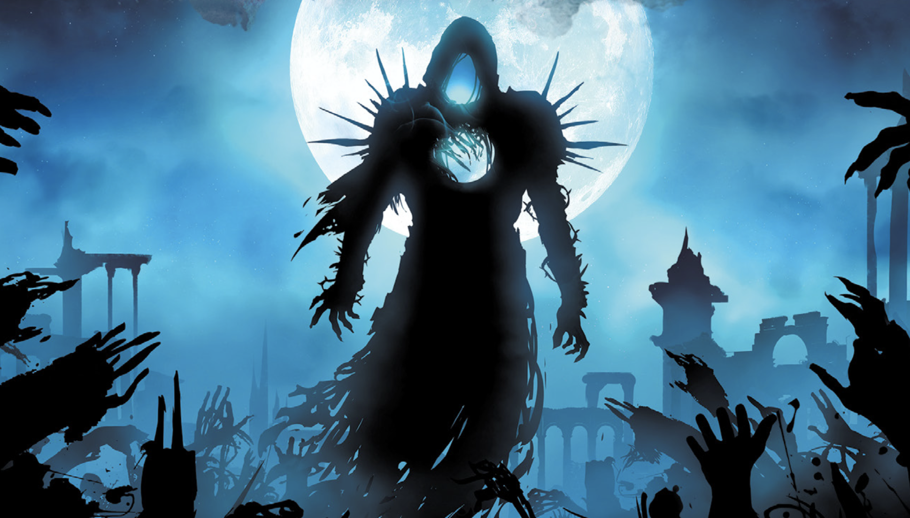
Don't explain any of this unless they ask. Even then, give the short version first. If they dig deeper, you can expand — but let them set the pace.
The Last War (894–996 YK) — a century-long war between the Five Nations of Khorvaire over the shattered Galifar kingdom. Ended two years ago with the Treaty of Thronehold. Millions dead. The current year is 998 YK.
The Treaty of Thronehold — the peace treaty that ended the Last War. Crucially, it did not recognise Droaam as a legitimate nation. Breland still officially claims the territory. This is a simmering political tension that could matter later in the campaign, but for now it's background noise — nobody in Graywall cares what Breland thinks.
The Mourning (994 YK) — the event that scared everyone into peace. An entire nation (Cyre) was destroyed overnight by an unknown magical catastrophe. Nobody knows what caused it. The former territory is now the Mournland — a dead, warped wasteland. This is the single most important event in recent Eberron history, and it's useful to have in your back pocket because it comes up in every Eberron source. But for the kids, it's a distant horror story — "a whole country just... died one day, and nobody knows why." Don't bring it up unless the campaign moves in that direction.
Dragonmarks / Houses — hereditary magical marks that grant specific powers. Twelve dragonmarked Houses control most commerce and services across Khorvaire (healing, transportation, banking, communication). The relevant one is House Tharashk (Mark of Finding) — they run the Calabas, they broker the monster mercenaries, and they're the closest thing Graywall has to legitimate foreign authority. When the kids encounter Tharashk, the simple version is "they're like a powerful guild that controls trade." The deeper version — that the Houses are essentially supranational corporations with more power than most governments — can wait.
The wider world — a kid who grew up in Graywall would have heard of Breland (the big nation next door), Sharn (the enormous city of towers, traders sometimes come from there), and maybe Karrnath or Thrane if they paid attention to travellers' stories. But they wouldn't know or care about the details. Keep it vague: "there are big human cities far to the east, and a dead country nobody goes to." The world becomes real when the story takes them there.
The Daughters of Sora Kell — Sora Katra (the schemer, wears faces), Sora Maenya (the brute, unstoppable), Sora Teraza (the seer, blind and ancient). They rule Droaam from the Great Crag. Every creature in Droaam fears and respects them. The kids know the Daughters exist and that they're in charge — that's the player-facing version. What the kids don't need: the Daughters' long-term political agenda (Droaam recognition, economic independence, military strength), the internal power dynamics between the three sisters, or the fact that Sora Teraza may be playing a much longer game than her sisters realise.
Blood of Vol, the Draconic Prophecy, Overlords — deep Eberron lore. The Blood of Vol is a religion focused on divinity within the self (and sometimes undead immortality). The Draconic Prophecy is a cosmic pattern that dragons and demons have been interpreting for millennia. The Overlords are imprisoned fiendish entities of world-ending power. None of this is relevant until it is. File it under "maybe in six months, maybe never."


Let them investigate. The kids talk to people, follow the vines, find tracks. The trail leads south to an old ruin half-swallowed by dark vegetation. Inside: traps (plants, not mechanical), undead servants, and a garden that shouldn't exist underground — darkwood trees, luminescent flowers, and soil that smells sweet and wrong.
The vampire isn't there yet. First session is the garden, the clues, and the feeling that something intelligent is behind this. They find a journal, or a note, or a beautifully tended greenhouse in the middle of a ruin. Someone is cultivating this. Someone patient.
The Mask: Gentle. Curious. Remembers every name. Always smiling. Hands like ice. Would never raise her voice. The kids should like this NPC at first — the betrayal hits harder that way.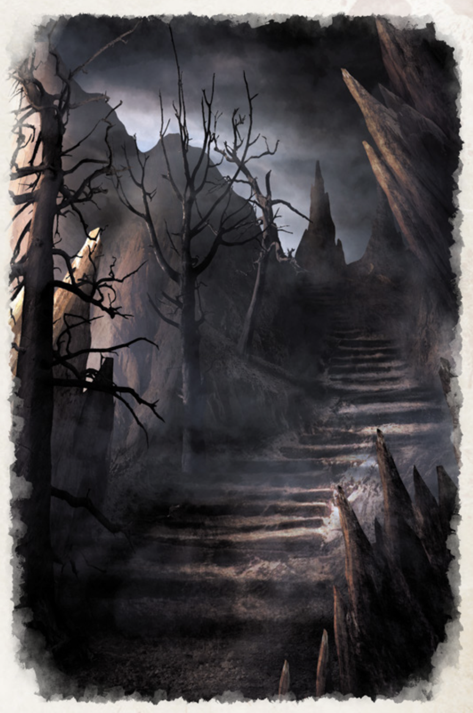
Escalation: To be planned once we know how much table time we have. The broad arc: strange plants → investigation → the vampire appears → someone goes missing → confrontation."Some gardeners plant in the dark."
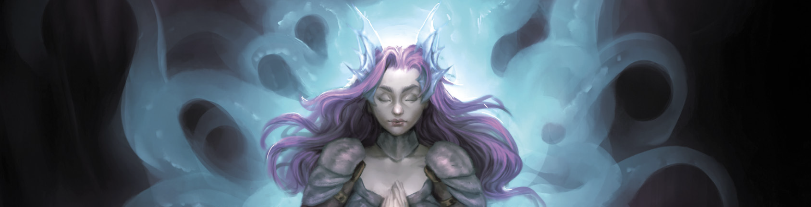
Dragonborn breath weapon PHB p. 187. Choose 15 ft cone or 30 ft line each time you use it. Always DEX save. Scales: 1d10 → 2d10 (5) → 3d10 (11) → 4d10 (17). Pick a damage type:
Let him pick what sounds cool. Fire or lightning if he wants advice. At level 5 all dragonborn get Draconic Flight — spectral wings, fly speed, bonus action, 1/long rest.
Three dragon families: Chromatic, Metallic (both in PHB), and Gem (Fizban's only). Creation myth: Bahamut (metallic god) and Tiamat (chromatic god) shattered the original world, dragonborn are echoes of that FToD p. 6.
Chromatic — evil-aligned, raw elemental power:
Metallic — good-aligned, wise and noble:
Gem — neutral, psionic. Fizban's only, not in PHB — DM reading only.
Your vampire gardener + creepy plants + kid-appropriate dark mystery maps perfectly onto several VRGtR chapters. Prioritised reading order:
Chapter 4 — Horror Adventures (essential). Seeds of Fear mechanics let kids calibrate their own horror tolerance. Fear and Stress rules replace flat saves with mounting tension — much better for a mystery where dread builds. Safety tools section explicitly covers running horror for younger players. Curse mechanics for the garden's supernatural taint.
Chapter 2 — Creating Domains of Dread. The "Creating a Darklord" framework is perfect for fleshing out your vampire gardener's backstory, fatal flaw, and obsessive motivation. The "Genres of Horror" tables (focus on Folk Horror and Dark Fantasy) give you environmental details and mood hooks for Graywall's corrupted vegetation.
Chapter 5 — Monsters. The Bodytaker Plant (CR 7) is a Huge plant colony with pod-creatures that melt when the parent dies — perfect as the vampire's "crop" and explains where the missing people went. Shambling Mound variants work as garden sentries.
Chapter 1 — Lineages & Dark Gifts. Dhampir lore helps you design thralls or half-turned NPCs in the underground. Dark Gifts offer temptation mechanics — the mystery touches back when the kids investigate too deep. Could be interesting for Amir's con-artist paladin: shortcuts to truth, false promises of power.
Chapter 3 — Domains of Ravenloft. Skim for domains with underground geography, corrupted nature, or patient intellectual villains. Use as atmosphere templates, not plot — Graywall isn't Ravenloft, but the mood translates.
Amir is fascinated by the undead in Graywall. Here's what to read so you can answer his questions and seed future plot hooks.
Exploring Eberron, Ch. 3 — "The Blood of Vol" ExE p. 57–59 This is the core. Explains why Seekers donate their corpses, why mindless undead do community labour, and the key misconception: Seekers don't want to become undead — undeath is a sacrifice, not a reward. The "Divinity Within" is lost when you die. Read at least through "Necromancy and the Undead" ExE p. 58. Also covers undead champions (vampires, mummies, liches) who protect Seeker communities — your vampire villain could twist this concept.
Exploring Eberron, Ch. 4 — "Droaam" ExE p. 81–92 You've read most of this, but revisit "Religion" ExE p. 85–86 for the Cazhaak Creed and the Keeper's role in Droaamish funerary rites. Droaam is religiously tolerant — a Seeker community fits. Also "The Denizens of Droaam" ExE p. 87–90 for the full species list so you know who else lives next door.
Exploring Eberron, Ch. 5 — "Dolurrh: The Realm of the Dead" ExE p. 156–160 Where souls go in Eberron. Important for understanding why Seekers fear death — souls fade in Dolurrh, there's no happy afterlife. This is what drives the whole Blood of Vol philosophy. Skim "Concerning Resurrection" ExE p. 159 too. Then "Mabar: The Endless Night" ExE p. 177–181 — the plane of negative energy, where necromantic power comes from. Mabaran manifest zones are where Seeker communities tend to settle.
Eberron: Rising from the Last War — Karrnath section. Short but covers undead soldiers in the Last War, Fort Bones, Fort Zombie. Good for context if Amir asks "are there undead armies?" — yes, Karrnath had them, they're sealed in vaults now. Also the Blood of Vol entry in the religions section.
Chronicles of Eberron — "Ghost Stories of Eberron" Chronicles p. 143–154 The motherlode. Starts with "The Reality of Undead" — how Eberron's undead actually work, why they exist, what drives them. Then every type individually: Skeletons & Zombies Chronicles p. 145 for your Seeker street-sweepers, Ghouls Chronicles p. 145, Wights Chronicles p. 146, Wraiths & Specters Chronicles p. 147, and crucially Vampires Chronicles p. 149 — read this before you finalise your villain. Mummies Chronicles p. 150 and Liches Chronicles p. 152 for later escalation.
Chronicles of Eberron — "The Keeper" Chronicles p. 74–80 The Dark Six deity of death, worshipped in Droaam via the Cazhaak Creed. "Many Faces of the Keeper" Chronicles p. 78 and "Using the Keeper" Chronicles p. 80 — Keeper priests handle funerary rites in Graywall, so this is who the kids would encounter around death and burial.
Chronicles of Eberron — "Karrnathi Undead" Chronicles p. 161–164 If Amir asks "are there undead armies?" — yes. Two variants: Canon (Unchanging, Chronicles p. 161) and Kanon (Uncanny, Chronicles p. 163) plus FAQ. Also "The Grim Lords" Chronicles p. 155–160 — powerful undead NPCs, good villain templates for later.
Lady Verdemis is Aereni — from Aerenal, the elven island-nation whose entire civilisation is built around the Undying Court: deathless sustained by positive energy and communal devotion Exploring Eberron p. 81+. The Undying Court isn't necromancy — it's the theological opposite. Aereni deathless exist because their people remember and honour them. A Keeper vampire is the antimatter version: sustained by Mabar's hunger, bound to a god who hoards souls in isolation. Verdemis didn't just become undead. From her people's perspective, in their interpretation, she chose the most philosophically repugnant kind of undead.
How she got here: The first vampires were created by the Qabalrin elves in the Age of Giants. The line of Vol resurrected the techniques on Aerenal, and when the Undying Court eradicated Vol's line, survivors fled west — founding the Bloodsail Principality and spreading to Karrnath Chronicles p. 149–150. Most Khorvaire vampires trace back to Qabalrin bloodlines. But Verdemis isn't Qabalrin-strain. She's Keeper-strain Chronicles p. 150.
Mabar — the Endless Night Chronicles p. 177+: The plane of entropy and loss. Mabar consumes — it drains light, life, and hope. Manifest zones where Mabar bleeds into the material plane are places where fires burn dim, plants wither, and living things feel a slow pull toward nothing. The Qabalrin elves built in and around these zones, studying Mabaran energy, and that's how they created the first vampires: epic necromancy fuelled by Mabaran entropy. Vampires are bound to Mabar — it's what drives the hunger, the thirst, the slow erosion of empathy. Every vampire is a conduit for the Endless Night's appetite.
The transformation: Centuries ago, a brilliant Aereni botanist studying plant specimens in Qabalrin ruins found a seed growing in a Mabaran manifest zone. She took it home, cultivated it, and it infected her: Mabaran energy seeping through the plant, draining her life force slowly, irreversibly. A botanist poisoned by her own curiosity. The Undying Court couldn't help — she was already tainted by Mabar, cut off from positive energy. The seed was doing what Mabar does: dissolving her soul into the Endless Night, pulling her toward nothing. Not death — erasure. Dying, saturated with entropy, she heard the Keeper. The Dark Six don't need temples — they listen for desperation. Mabar shakes souls loose; the Keeper catches what falls. His offer: that soul doesn't dissolve into Mabar. It goes into my collection instead. He pulled her out of the Endless Night's grip and gave her the Blessing of the Fang Chronicles p. 75 — a supernatural gift directly from the god. Now her kills feed his hoard: souls permanently removed, bound to the Keeper instead of passing to Dolurrh. She didn't choose vampirism over death. She chose existing as property over ceasing to exist entirely.
The darkest part: the Keeper didn't have to look hard. The obsessive cataloguing, the botanical perfectionism, the need to acquire and preserve — already Keeper-aligned. The Mabaran seed resonated with something that was always there. And when she heard his offer, she understood the terms perfectly: eternal service, her soul in his collection, her kills feeding his hoard. She said yes anyway, because the alternative was dissolving into nothing. The poetic horror: she's still doing the exact same thing centuries later — collecting, preserving, keeping — just on a larger scale, and now it's souls instead of seeds.
Keeper-strain mechanics Chronicles p. 150–151: She can't create spawn — victims become soul-bound, not vampires. This keeps the final fight a solo boss. Her hunger manifests as greed, not bloodlust: she collects, catalogues, acquires. Names, seeds, flowers, souls. The accumulation is compulsive. Keeper's Greed (must accept gifts) and Perfect Etiquette (must answer truthfully when named) aren't character quirks — they're the rules of exchange the Keeper imposes. She pays because the debt demands it. Her brief, cryptic answers aren't coyness; she's counting exact change.
The tragic angle: If the kids use Perfect Etiquette well — "Lady Verdemis, why did you become this?" — she'll answer: "I was afraid of disappearing." That's true, and it's all they get. She was an Aereni who saw Dolurrh's oblivion and couldn't face it. But centuries of Mabaran hunger have burned away whatever empathy she once had. She's not conflicted. She's not redeemable. She's lucid and just doesn't care. The mask isn't hiding inner turmoil — it's hiding nothing at all.
What the kids will actually figure out: The Keeper lore is headcanon for playing her consistently. The kids care about exploitable rules, not theology. Three things to foreshadow:
(1) She answers truthfully when you say her name. She dodges a question once, then answers a differently-phrased one that happens to include "Lady Verdemis." The kids will test it, notice the pattern, and abuse it in the confrontation. (2) She keeps presents. A flower, a coin, anything given to her early shows up again later in her collection. Once they realise she can't refuse gifts, they'll weaponize it in the final fight. (3) She's vulnerable after draining life. The Life Drain cost (grounded, solid, no flying, no shapeshift for a full round) is Amir's smite window. The materialisation after Life Drain is obvious and physical — that's when to hit her.
The raw material: Rixit's vine-sickness remedy is brewed from harvested vine matter — plant tissue saturated with Mabaran energy from Verdemis's garden. At full concentration, Mabaran entropy dissolves life. Diluted into a tincture, it does something worse: it preserves. Symptoms stop progressing. Tissue stabilises. Patients feel better. But they're not healing — they're being suspended. The medicine holds the body in stasis by creating a slow, imperceptible drain on the soul. Entropy in a bottle, administered with care.
The side effects: Long-term users develop subtle signs. Skin slightly cool to the touch. Colours seem duller to them. Sleep becomes dreamless — not restful, just empty. Emotional responses flatten: things that should make them laugh or cry just... don't land. A Medicine (DC 14) check on a long-term patient reveals their life force is dimmer than it should be. Detect Evil and Good pings faintly — not undead, not fiend, just wrong. Like something is loosening.
The mechanism: Mabaran energy tethers. Each dose strengthens the connection between the patient's soul and the Endless Night — not enough to kill, not enough to transform, but enough to loosen the binding between soul and body. When a tethered person eventually dies (of anything — old age, accident, violence), their soul doesn't pass through Dolurrh normally. It slips sideways, into the Keeper's collection. Rixit's apothecary is a soul-preparation facility. She has no idea.
Verdemis knows. She doesn't need to orchestrate it — Rixit discovered the medicinal properties independently. But Verdemis noticed, and she decided to leave it alone. A grieving goblin herbalist accidentally pre-processing souls for the Keeper's hoard? That's not a problem. That's infrastructure. She might even subtly encourage Rixit's vine-harvesting by leaving particularly potent growth near accessible paths.
The Torvik proof: If the kids ever learn to detect soul-tethering (Detect Evil and Good, or Religion DC 15 in the right context), they can test Rixit's patients — and find the faint Mabaran signature. And Torvik — if they find his body in the vines — registers as nothing. Not in Dolurrh, not reachable by Speak with Dead. His soul is in the Keeper's hoard. He's a specimen now. Rixit is funding the search for a man whose soul is already gone, using profits from the very thing that feeds the god who took him.
The profit ledger recontextualised: Rixit's weekly income progression (3→41 gp, visible on her cork board) isn't just her getting better at business. The vine infestation is spreading, more people get sick, her "cure" is the only thing that works, demand grows. She's scaling up. The more she succeeds, the more souls she prepares. The ledger is a harvest report.
At the table: None of this needs to come out in Phase 1. It's background logic that makes Rixit's situation consistent and gives you answers when the kids ask hard questions later. The side effects are slow enough that nobody in Graywall has connected them yet — people blame the vine-sickness itself. If the kids do figure it out (probably Phase 2+), it's a gut-punch: the kindest NPC in town has been doing the most damage.
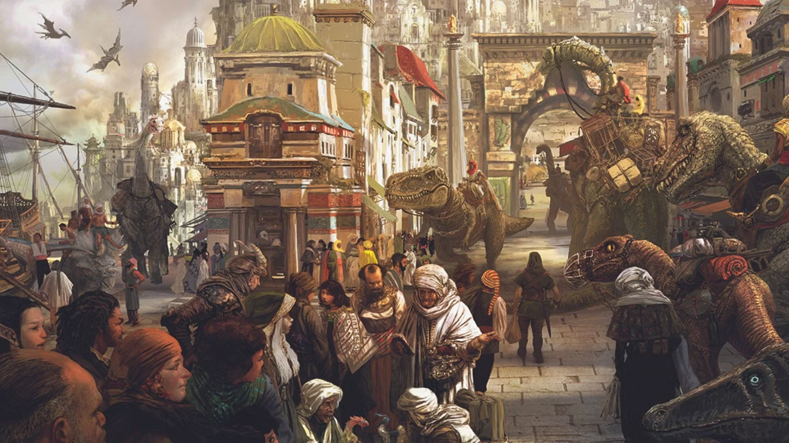
The Ghost. A goblin with a Dhakaan name and nothing to show for it — "Vaelk" means something like "unseen hand" in old Goblin, and they've made it a lifestyle. Moved into the abandoned castle south of Graywall six months ago because it was free, creepy, and nobody asks questions about a ruin. The lights in the windows, the moving shadows, the plants swinging at night — half of it is Vaelk in different shapes, half is just wind and a bad reputation doing the work for them. Runs a smuggling waypoint through the castle cellar: Droaam antiquities come in, get crated, go out to a contact in the Calabas. Vaelk is Amir in 20 years if Amir never finds a cause.
The Charmer. Arrived in Graywall with nothing, acts like she owns the place. Former holy warrior of Thrane who lost her faith when she saw the Silver Flame's crusades up close. Now a grifter in the Calabas — sells "blessed" trinkets, tells fortunes with a straight face.
The Gardener. Arrived in the Droaam borderlands decades ago. Soft-spoken, courteous, endlessly curious about plants. Buys rare seeds from merchants in disguise. Asks about your favourite flowers. Remembers your name. Seems kind.
The Preacher. A warforged druid living at the edge of the Watching Wood, south of Graywall. Built during the Last War as a siege unit, found purpose tending wild land after the Treaty. Believes civilisation is a wound that festers — talks about it constantly, loudly, at the Bloody Market in Bloodstone. He reaches town through old Dhakaani tunnels beneath the Labyrinth — nobody knows this route but him.
The Recluse. A medusa aristocrat whose walled estate sits in the Calabas. Servants come and go but never stay long. The shutters are always drawn. Rumours range from illegal alchemy to worship of a dark woodland entity — the kind of gossip that sticks to someone who never shows their face in public.
The Widow. A goblin herbalist who runs a tiny apothecary in Sar Kuraath. Known for remedies that actually work — rare in Graywall. Lost her husband Torvik three months ago; he went foraging in the Watching Wood and never came back. Since then she's been different. Quieter. Stays up late. Gathers things in the forest at night.
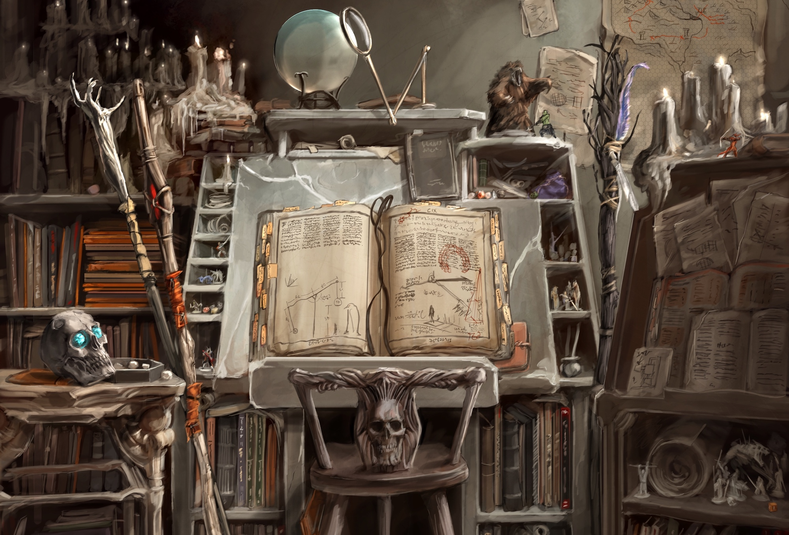
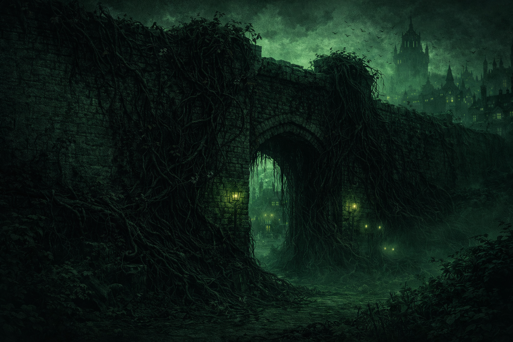
Amir hat sich in die Welt eingelebt und etwas über Graywall und das Land Droaam und den Kontinent Khorvaire erfahren. Wir haben über die Hexen gesprochen und über den Mind Flayer, über das seltsame Wachstum von schrägen Pflanzen wie schwarzen Rosen oder verknorksten dunklen Lianen und Schlingenranken. Und dass Leute verschwinden, plötzlich.
Dann haben wir den Charakter zu bauen begonnen. Schön dem Player's Handbook nach. Klasse zuerst, dann Stats, dann Hintergründe. Wir haben die Standard-Stats für Paladine genommen, ich habe die Stats (Abilities) auch etwas erklärt, aber wir haben jetzt auf mehr CHA statt STR gewechselt weil das zum Charakter einfach besser passt.
Im Süden gibt es eine Burg. Die ist auch überwachsen, war lange verlassen, jetzt sieht man aber ab und zu wieder Licht in den Fenstern. Schatten, die sich bewegen. Die Pflanzen auch, schwingen in der Nacht. Creepy.
Amir weiss jetzt, wie er in der Stadt Graywall gelebt hat: Er hat sich mit Deals durchgeschlagen, kennt die ganze Stadt in- und auswändig, kann Leute einfach so mit viel Blabla überzeugen. Er ist deutlich mehr Scharlatan als Paladin, ganz sicher kein nobler Ritter oder religiös.
Wir wurden mit dem Charakter nicht fertig, aber das macht nichts. Wir haben ein Bild davon. Dragonborn, mächtig, wird fliegen und etwas speien können. Ich wusste gerade nicht was; auf Seite 187 unten links ist eine Tabelle. Kann Feuer oder Gift oder Blitze oder Kälte sein, Amir kann das noch aussuchen. Wir machen nächdstes Mal einfach da weiter wo wir waren.
| Dragonborn Paladin · Level 1 | |||
|---|---|---|---|
| Name | ??? | Background | Charlatan |
| STR | 14 (+2) | INT | 8 (−1) |
| DEX | 10 (+0) | WIS | 12 (+1) |
| CON | 13 (+1) | CHA | 15 (+2) |
| Speed | 30 ft | Proficiency | +2 |
| Armor | Light, Medium, Heavy, Shields | Skills | Sleight of Hand, Deception, Intimidation, Persuasion |
| Feat |
Skilled (3 proficiencies — noch nicht verteilt) | ||
| Equipment | Chainmail, shield, longsword, 6 javelins, holy symbol, priest's pack, forgery kit, costume, fine clothes, 24 gp | ||
Alles kann nichts muss. Wir können das alles zusammen, würd mir Spass machen.
AmirIdeen:
…musst aber nicht alles ausfüllen, das wär ja wie Hausaufgaben 🤭
Nächste Session (Session -1)If you only read one thing before the next session: Chronicles of Eberron — Vampires Chronicles p. 149. That's your villain's engine. Everything else can wait until the kids drag you there organically.
Pre-picking Amir's spells is the right call. "Sera teaches him between sessions" is an elegant handwave — eleven-year-olds don't want to study a spell list, they want to hold their hand out and mean it.
Amir's paladin isn't religious or noble. He's ambitious. His oath is personal: I will rise. I will not be ordinary. I will not let others define my worth.
Sera Tain is the catalyst. A broken paladin turned Calabas grifter who still steps forward when it counts. She teaches him a few things — fighting, attitude, how to read people. Then dares him: "If you're going to be great, swear it." He swears. She laughs and walks away. That's the oath origin.
She also teaches him how the oath works — Lay on Hands, the smite, the feeling when the power answers. She knows because she had it and lost it. She can show him the shape of it without being able to do it herself. That's what makes her the right teacher.
This is a story about ambition turning into heroism. Later, challenge Amir: Does greatness mean being feared, or being admired? That's growth fuel.
At level 1 he picks 2 prepared spells PHB p. 110. Divine Smite doesn't count — always prepared via Paladin's Smite at level 2. Pick:
Why not Cure Wounds? Lay on Hands already covers emergency healing (5 HP pool, bonus action, no slot). Burning a spell slot on Cure Wounds when Bless helps both kids every round is a bad trade at level 1.
Swap-ins (after a long rest, trade one out):
Detect Magic PHB p. 267 — Ritual tag, so no spell slot needed (just 10 min casting time). The only cost is the prepared slot (one of two at level 1). Great for investigation sessions — swap in before heading into the castle or the Wood, swap out when you expect combat.
Shield of Faith PHB p. 310 — Bonus action, 10 min, concentration. +2 AC on one creature within 60 ft. Good before a fight you see coming.
Heroism PHB p. 284 — Action, concentration, 1 min. Touched creature gains temp HP = CHA mod at start of each turn and is immune to Frightened. PHB recommended pick — solid but less impactful than Bless.
Sera teaches him these between sessions: "Hold your hand out. Mean it."
He picks an oath at level 3 PHB p. 113. Four options in the PHB. For a CHA-focused Charlatan dragonborn played by an 11-year-old:
Don't pre-pick. Let him read the oath tenets and choose. But if he asks: Glory.
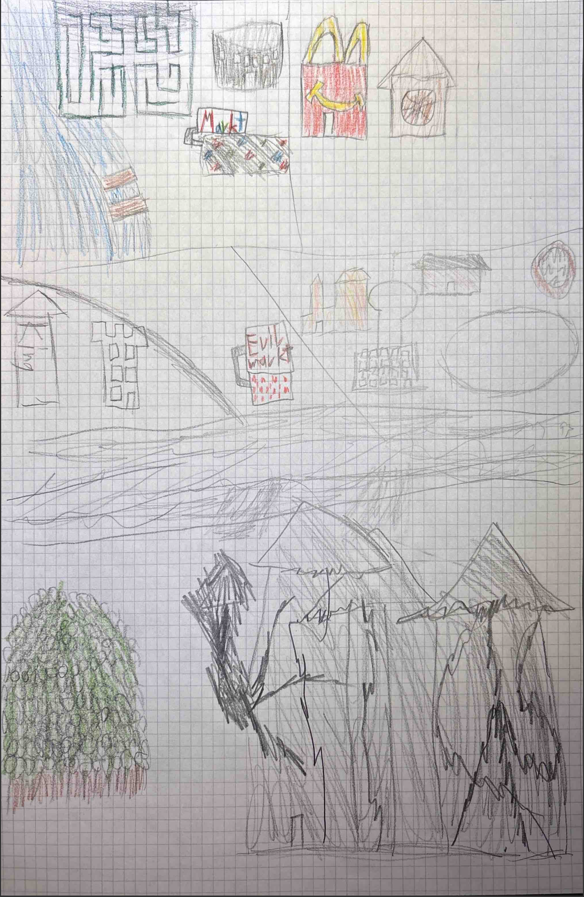
Amir konnte natürlich aussuchen, was er als nächstes machen will. Ich habe eine kleine Karte vorgezeichnet mit was alles auf die Karte drauf muss — die Quartiere von Graywall, die Südmauer mit den Ranken, die Burg und der Wald im Süden, die wichtigen Gebäude in den Quartieren.
Amir hat alles noch viel schöner gezeichnet als ich das hätte können und hat die Sachen auch wunderbar ausgemalt. Die vier Quartiere heissen:
Besonders gefallen mir:
Die folgenden Story-Sachen hat Amir auch gelernt:
| Dragonborn Paladin · Level 1 | |||
|---|---|---|---|
| Name | Spark | Alignment | Chaotic Neutral |
| Background | Charlatan | Species | Dragonborn |
| STR | 14 (+2) | INT | 8 (−1) |
| DEX | 10 (+0) | WIS | 12 (+1) |
| CON | 13 (+1) | CHA | 15 (+2) |
| Speed | 30 ft | Proficiency | +2 |
| Armor | Light, Medium, Heavy, Shields | Skills | Sleight of Hand, Deception, Intimidation, Persuasion, Performance, Insight, Perception |
| Feat | Skilled (Performance, Insight, Perception) | ||
| Equipment | Chainmail, shield, longsword, 6 javelins, holy symbol, priest's pack, forgery kit, costume, fine clothes, 24 gp | ||
Alles kann nichts muss, gilt immer noch.
AmirIdeen:
…musst aber nicht alles ausfüllen, das wär ja wie Hausaufgaben 🤭
Nächste Session (Session Zero)Heute war Session Zero mit Amir und Kais zusammen. Kurze Session — wir haben Kais den Charakter vorgestellt und ein paar Sachen zusammen angeschaut.
Kais hat sich Sparks Karte angeschaut und Amir hat ihm die Stadt erklärt. Die Quartiere, die Burg im Süden, die Ranken die überall wachsen, die Märkte wo Spark seine Deals macht.
Wir haben mir Amirs Charakter-Datenblatt weiter gemacht. Ist fast fertig, die Spells fehlen noch (und die Saving Throw Proficiencies WIS und CHA).
Beide Kids haben vom Krieg gehört, Amir hat ein Bild von Korrath dem Warforged Druid gesehen, der auf dem nördlichen Markt schon länger vor Verderben warnt — länger als dass die Schlingpflanzen da sind.
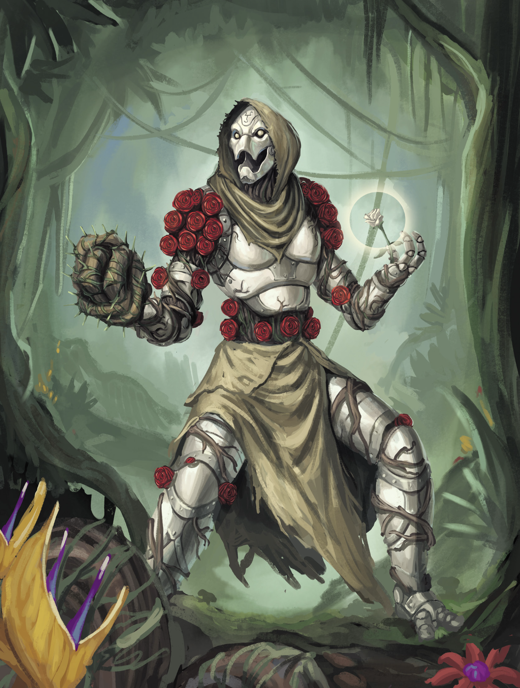
Kais muss sich jetzt überlegen welche Klasse und welche Rasse er spielen will. Ein paar Ideen haben wir schon besprochen — Rogue, Wizard, Ranger oder Warlock würden sich alle gut ergänzen mit Sparks Paladin.
| White Dragonborn Paladin · Level 1 | |||
|---|---|---|---|
| Name | Spark | Alignment | Chaotic Neutral |
| Background | Charlatan | Species | White Dragonborn |
| STR | 14 (+2) | INT | 8 (−1) |
| DEX | 10 (+0) | WIS | 12 (+1) |
| CON | 14 (+2) | CHA | 17 (+3) |
| HP | 12 | AC | 18 (chainmail + shield) |
| Hit Dice | 1d10 | Initiative | +0 |
| Speed | 30 ft | Passive Perception | 13 |
| Proficiency | +2 | Languages | Common, Draconic, Goblin |
| Armor | Light, Medium, Heavy, Shields | Skills | Sleight of Hand, Deception, Intimidation, Persuasion, Performance, Insight, Perception |
| Species Traits | Draconic Ancestry (White) · Breath Weapon (15 ft cone or 30ft line of cold, Cold, DEX save DC 12, 1d10) · Damage Resistance (Cold) · Darkvision 60 ft | ||
| Feat | Skilled (Performance, Insight, Perception) | ||
| Weapons |
Longsword: +4 to hit, 1d8+2 slashing (versatile 1d10+2) Javelin (6): +4 to hit, 1d6+2 piercing, thrown 30/120 | ||
| Equipment | Chainmail, shield, longsword, 6 javelins, holy symbol, priest's pack, forgery kit, costume, fine clothes, 24 gp | ||
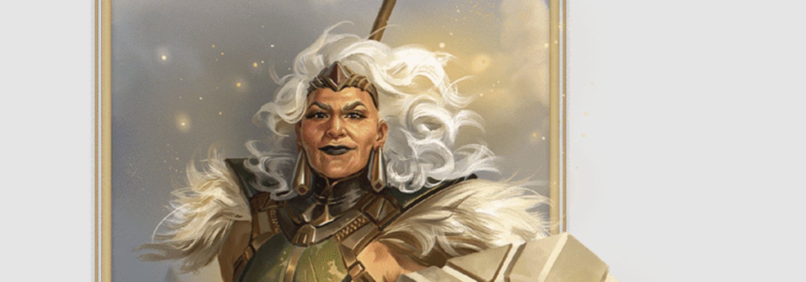
Amir wants dice in his hands. This is the session where Sera teaches Spark how to use what he's got. Each lesson is a short scene with a check or two — pick 3–4 that fit the time you have. Run them as vignettes: Sera sets up the situation, Spark acts, dice decide.
End the session with Sera giving him something — a coin, a piece of advice, a look. Something that says: you're ready, even if you don't believe it yet.
All decoys are in the NPC section above. Here's how to use them in play:
Korrath (The Preacher) — easiest to encounter. He's at the Bloody Market in Bloodstone, ranting about doom. Amir already knows him from session zero. The market rose scene (see below) is the key moment — druid chants, plant appears, crowd panics. Following him leads to Thesska's estate (secret meetings) and eventually to the Labyrinth and his clearing. He's hostile when confronted and refuses to explain anything, which makes him look worse. See "Making Korrath Look Guilty" for how to run him.
Thesska Mirren (The Recluse) — harder to reach. Locked estate, servants deflect visitors. The tavern gossip route works: former servant Dresh at a Calabas tavern talks about locked rooms and midnight deliveries. But also: following Korrath leads here. The kids see him entering the estate at night — two suspects meeting in secret. Getting inside takes persuasion, deception, or breaking in. Once inside, they find crated antiquities and Cazhaak creepers in the cellar that look suspiciously like the dark vines. She's angry, not scared — and she's lying about knowing Korrath.
Rixit (The Widow) — the emotional one, but also the suspicious one. Her apothecary in Sar Kuraath is booming — she's the only healer who can treat vine-sickness, and she won't share how. Locked back room, secret night trips to the Wood, income tripled. The crowd at the market rose scene points Amir her way. She's helpful but evasive — earning her trust (DC 12 Persuasion, or mention Torvik, or just be kind) unlocks the Map on the Wall. See "Making Rixit Look Guilty" for how to run her.
Korrath lives at the edge of the Watching Wood but shows up regularly at the Bloody Market in Bloodstone to preach. How? The Labyrinth — old Dhakaani mine tunnels carved into the mountain. He knows a collapsed section deep inside that connects to a passage emerging south of town, near the treeline by his clearing. Nobody else knows this route.
If the kids explore the Labyrinth: They find warforged-sized footprints in the dust (no other prints — he's the only one who comes this deep). Druidic marks on the walls — curling, organic shapes drawn in living sap. They look like growth symbols, not research. Vine tendrils push through the rock near the marks, clustering around them. At a mark that still has wet sap (fresh — someone was here today), a crack splits the wall and a tendril pushes through while they watch. He's trying to push the growth back with primal wards. It's not working — Mabar eats the energy and pushes harder. To the kids: he drew it, it grew.
Why this matters: It's a back door to a prime suspect. Instead of confronting Korrath at the market where he's defensive and performing for a crowd, they find his private space — the clearing where he actually does his work. It's also the first time they realise how close the Watching Wood's influence reaches: the deepest Labyrinth tunnels have vine tendrils pushing through the rock, weeks ahead of what's visible on the surface. Korrath knows this. It's why he's been ranting with increasing urgency — he can't explain how he knows without revealing his secret route through restricted tunnels.
His druidic wards feed Mabar instead of containing it. He marks a spot, vines grow there. Every time. He doesn't understand why.
The market rose. Korrath does a druidic ritual in the market square. A black rose pushes through the cobblestones while people watch. Druid chants, plant appears. Crowd panics. He was trying to suppress a breakthrough — doesn't matter.
The granary wall. He predicts it: "That wall. Three days." Kids go check — see a robed figure at the wall that night, Perception (DC 12) to recognize metal fingers drawing a mark. Next morning: vines at that spot, mark integrated into the growth. He called it, went there, it happened.
Rixit's well. Predicts the water will turn, is seen near the well that night. Rixit is furious: "He warned us. And he was there that night." She hates him — his ranting scared people off taking the problem seriously, and now Torvik is missing.
The clearing. Ritual circles, vine samples pinned to trees. Looks like cultivation, not research. Nature (DC 14) to see it's study — below that, it's a druid tending a vine garden.
The hook: After the market rose scene, the panicking crowd splits. Practical types: "Die Goblin-Apothekerin in Sar Kuraath — die verfolgt das seit Wochen. Ihr Mann ist wegen den Ranken verschwunden." Faithful types: "Schwester Aldrice segnet die Türen in der Calabas, das hilft auch." Two leads from one event — Rixit bridges Amir from Bloodstone to Sar Kuraath, Aldrice points to the Calabas.
The vines sap energy. Anyone who touches or plucks a vine feels drained — cold fatigue, brief numbness. People across Graywall are getting vine-sick from accidental contact, and they all end up at Rixit's shop. She's the only healer who knows what to do — though her regulars have a certain dullness about them. Cool skin, flat affect.
Checks: Nature (DC 12) or Herbalism Kit (DC 10) to identify the draining effect. Medicine (DC 12) on a vine-sick patient to recognize necrotic energy. Anyone who handles a vine bare-handed: CON save (DC 10) or one level of exhaustion for an hour.
More vines = more vine-sick people = more customers. She's busier and richer than she's ever been. Her remedies work, nobody else's do — and she won't share the recipe. (Her patients stop getting worse but never fully recover. Dreamless sleep, cool hands.)
The shop. Back room is locked. Vine samples in jars, drying racks of dark plant matter, the pin map on the wall. Looks like she's farming the problem, not fighting it. Investigation (DC 13) to find her ledger — income tripled in three months.
The secrecy. She's evasive about her ingredients. Won't say where she sources them. Gets hostile if pushed — "You think I want these vines? They took my husband." But she's been going into the Wood alone at night. Perception (DC 13) or Stealth vs her Passive Perception to follow her — she's harvesting vine material for her remedies.
The truth. She's not causing anything. She's a grieving widow who stumbled onto a treatment and is terrified that if people learn she goes into the Wood, they'll think she's involved. The secrecy makes her look guilty. The profit is real but unintentional — she'd trade it all for Torvik. (She's noticed the side effects. Blames the vine-sickness. Keeps a private note: "Patienten werden ruhiger. Kälter? Liegt an der Krankheit.")
Amir knows about the castle from session zero. He'll want to go there. Let him. Reward the brave call.
What they find: If they knock, Lord Draven answers — imperious, dismissive. Suspicious as hell. Sneak in or push past and they find Vaelk: a panicked goblin con artist in a nightgown eating stolen fruit. The castle is creepy because Vaelk wants it that way — keeps people away from the smuggling op. The vines bother Vaelk too.
Draven vs Vaelk: Lord Draven is the suspicious one — the persona that feeds rumours, acts sinister, makes the castle look haunted. Vaelk feeds that suspicion deliberately. It's fun, it keeps people away, and anyone investigating "Lord Draven" isn't looking at the docks where Korrga moves crates. If the kids focus on Draven as a villain, Vaelk is delighted.
For Amir: Same skillset as Spark — fast talk, disguises, reading people — but no oath, no friends, no purpose. The character beat: Vaelk goes quiet when Amir mentions his oath. "You actually believe in something. That must be nice."
For Kais: Vaelk is a puzzle. Perception / Investigation checks go to Kais — crate markings, smuggling setup, the fact that Vaelk is scared of the vines too.
Verdemis knows. Ancient vampire, clocked the changeling instantly. Doesn't reveal it — leverage is more useful. Drops hints for her own amusement: "You wear that face well, Lord Draven." Vaelk is terrified of her and won't cross her. He hides it well — Perception (DC 25) to notice his hands freeze and his smile lock when she's around. This is also why Vaelk won't share what they've seen from the tower (vine growth radiating from one point in the forest): Verdemis is watching, and helping the kids would mean poking at her business. That information is currency for later — once Vaelk trusts them enough to risk it.
Lady Verdemis first appears mid-phase — session 2 or 3, whenever the investigation is rolling. She doesn't tag along. She shows up irregularly and helps. Two options for the first meeting — pick based on how things went:
Option A — Castle visitor: She shows up at Vaelk's castle, tracking the vine growth to the same area. Vaelk knows her as a regular customer — she buys rare botanical specimens from his smuggling haul. The kids trust her because the goblin trusts her. Ironic. Tragic later.
Option B — The rescue: The kids find her near the vine growth, seemingly overwhelmed by aggressive plants. They save her. She's grateful, "wounded," and now has every reason to stay close. They'll feel personally invested in protecting her — which makes the betrayal hit harder.
Option C — Tracking Korrath: If the kids are deep in the Korrath investigation, Verdemis shows up tracking him too. She's concerned — a druid this obsessed with the vines could be dangerous, and she's been watching him lay marks that seem to accelerate the growth. "I've been following him. He's doing something to the plants — I just can't tell what yet." She validates the kids' suspicions, offers to help investigate, and now she's an ally against their prime suspect. She has every reason to keep tabs on a druid poking at her garden — and every reason to point the kids at him instead of her.
After that: she appears when they're stuck. Identifies a plant, offers a theory, then has somewhere else to be. Always helpful, never intrusive. Remembers their names. Each time she turns up feels like a lucky coincidence. It isn't.
Phase 1 is 3–6 sessions depending on pacing. For a ~1 hour session with two kids: two encounters max. The opening scene (vines on the wall, crowd) + one NPC encounter or one exploration is a full session. If they go to the castle and meet Vaelk, that's the whole hour. If they stay in town and meet Korrath, that's the whole hour. Don't try to run all the decoys in one go. Let it breathe — spread the decoys, the investigation threads, and the Verdemis introduction across the phase.
Her back room pin board — crude map with post-its, vine sighting pins, crossed-out theories, and red string. Shareable as a prop when the kids earn her trust.
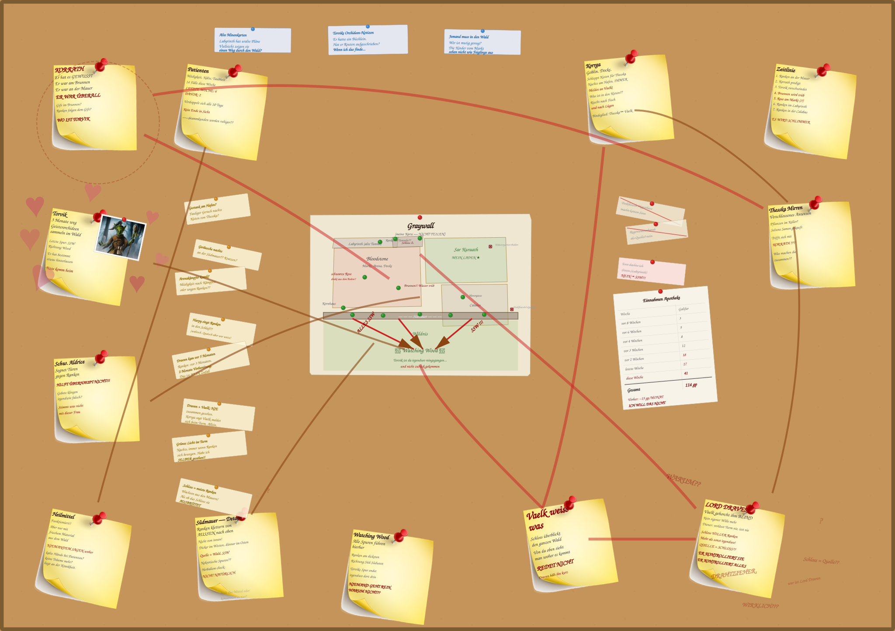
When the players finally realise Rixit's remedy is tethering souls, they face a dilemma with no clean answer:
Stop the medicine — the vine-sickness resumes its lethal progression. People start dying.
Continue the medicine — more souls are tethered to the Keeper.
Kill Verdemis — breaks the Mabaran link at its source, but the tethers start to fray. Everyone currently "preserved" by the medicine begins sliding back toward full vine-sickness.
This sounds like a mass casualty event. It doesn't have to be.
Killing Verdemis doesn't snap the tethers instantly. The Mabaran connection frays over days — patients don't drop dead, they start getting sick again, slowly. This gives the party a ticking-clock quest: find a real cure before the tethers dissolve completely. Dramatic urgency, not horror.
Timeline: After Verdemis dies, the party has roughly 1–2 weeks before the sickest patients (the ones who've been on the medicine longest) relapse to critical. Newer patients have more time. Rixit's meticulous records tell them exactly who's most at risk and in what order.
The solution has been growing in Thesska's garden the whole time. But they need Sera to understand why.
Sera Tain's role: She's the one who connects the dots. Sera knows planar lore — Mabar, Irian, how the planes bleed into Eberron. She identifies what the medicine actually is (Mabaran entropy in a bottle) and what the cure needs to be (an Irian counterpart). Without her, the others have the tools but not the theory. This is her paladin-teacher moment: she can't heal anyone directly, but she can point the healers in the right direction.
Thesska's role: Her Cazhaak creepers and vine specimens aren't just business experiments — some of them are Irian-touched, carrying traces of positive-energy planar influence. Verdemis has been steering Thesska away from exactly these specimens for months. Once Verdemis is gone (or exposed), Thesska is free to actually study what she has. Her botanical skill is world-class — she just needs the right direction.
Rixit's role: She's the only person in Graywall who understands the medicine's chemistry. She knows every patient, every dosage, every reaction. Her records (the ones on the cork board) become the key to calibrating a weaning protocol — who needs treatment first, how fast to taper, what the danger signs look like. She's devastated when she learns the truth, but she's a healer. She pivots to fixing it.
Korrath's role: As a druid, he can sense the planar energy in Thesska's specimens that nobody else can identify. He confirms which plants carry Irian resonance and helps cultivate them rapidly — druidic magic accelerating what would normally take weeks of growth. He can also perform a purification ritual on the final tincture, burning out the last Mabaran traces. The warforged who couldn't save the forest gets to save the town.
The brew: Together, the three of them develop an Irian-infused counter-tincture that does what Rixit's original medicine was supposed to do: actually heal the vine-sickness, while gently dissolving the soul-tethers rather than reinforcing them. It takes 2–3 days to develop and another few days to produce enough for everyone. The party's job during this time is protecting the brewers, gathering rare ingredients, and keeping Graywall from panicking.
Mabar, the Endless Night. "It's the plane of entropy. Everything there decays — slowly, inevitably, forever. Things don't die in Mabar; they fade. And anything touched by it starts fading too. That's what the medicine does. It borrows Mabar's patience: nothing gets worse, but nothing heals either. The body holds. The soul loosens."
Irian, the Eternal Dawn. "The opposite. Pure radiance — not fire, not heat, just... life wanting to exist. Irian energy doesn't destroy Mabaran energy. It outgrows it. Like sunlight through mould. If we can find something that carries even a trace of Irian resonance, we don't need to fight the entropy. We just need to give the body something better to hold onto."
Let the kids assemble the team. Don't hand them the solution — let them figure out that they need Sera's lore, Thesska's plants, Rixit's records, and Korrath's druid magic. If they've treated these NPCs well during Phase 1, each one agrees readily. If they accused Thesska of being the villain or got Rixit arrested, there's repair work to do first. Consequences.
The montage beat: Once all three are working together, you can run a short skill-challenge montage — Nature checks to identify the right specimens, Medicine checks to calibrate dosing, Persuasion to keep patients calm during the transition. Let every party member contribute something. This is the "community comes together" moment.
The death-rattle. When Verdemis dies, don't just have her turn to ash. The Keeper's debt collects immediately — shadows thicken, the temperature drops, something arrives. But she doesn't look at the players. She looks past them, into the dark, and her last words aren't fear or rage. They're bookkeeping: "I paid the exact change. My soul is not a gift — it is a purchase. Keep the receipt." Even dying, she's auditing the transaction. The kids won't fully understand what she means, but they'll feel it. Let the silence sit.
The Keeper doesn't care. Optional dark-comedy beat: a Religion (DC 14) check reveals that the Keeper of the Flame (the Blood of Vol entity hoarding the souls) isn't even upset about losing the tethered patients. They were low-quality acquisitions — sick, weakened, barely conscious. The Keeper trades in power, not quantity. Verdemis was the real prize, and she's already gone. The tethered souls? The Keeper lets them go with the divine equivalent of a shrug. Anticlimactic on purpose — the real villain's god doesn't even care about the collateral damage.
Torvik. The one person they can't save. His soul is in the Keeper's hoard — fully claimed, not tethered. Speak with Dead doesn't reach him. Rixit has to accept this. If the party found his body in the Watching Wood, they can give him a proper burial. That scene writes itself.